20 Coding Interview Patterns
An in-depth, beginner-friendly study guide — ordered from easiest to hardest
This guide covers 20 core algorithmic patterns that cover the large majority of coding interview questions. Patterns are ordered from easiest to hardest to learn, so you can study them in sequence and build on what you already know. Each pattern includes a detailed explanation (~300 words), a visual diagram of the mechanism, and Java pseudocode with a clear problem statement, meaningful variable names, and inline comments explaining every step.
Study order: Two Pointers -> Hashing -> Fixed Sliding Window -> Prefix Sum -> Fast & Slow Pointers -> Variable Sliding Window -> Binary Search -> Kadane's Algorithm -> Merge Intervals -> Monotonic Stack -> Cyclic Sort -> Heap -> Binary Search on Answer -> Tree BFS -> Tree DFS -> Backtracking -> Graph BFS -> Topological Sort -> Union-Find -> Dynamic Programming.
1. Two Pointers
The two pointers technique replaces nested loops with two indices that move through the data in a coordinated way, usually across a sorted array. Where a brute-force solution might check every pair of elements with two nested loops (O(n^2)), two pointers typically solves the same problem in a single O(n) pass by being smart about which pairs are worth checking.
The most common setup is the 'opposite ends' variant: one pointer starts at the beginning of the array (leftIndex) and another starts at the end (rightIndex). At each step, you evaluate the pair they point to and decide how to move based on that result. For example, in the 'Two Sum II' problem on a sorted array, if the sum of the two pointed-to values is too small, you know you need a bigger number, so you move leftIndex rightward. If the sum is too large, you move rightIndex leftward. Because the array is sorted, this decision is always safe — you never skip over the correct answer. Each step eliminates at least one element from consideration, guaranteeing the whole array is covered in linear time.
A closely related variant appears in 'Container With Most Water,' where you always move the pointer at the shorter wall, because moving the taller wall can only decrease or keep the same area — it can never help, since the water level is bounded by the shorter side.
Two pointers also generalizes to three or more values, as in 3Sum: fix one element with an outer loop, then use two pointers to search the remaining sorted portion of the array for a pair that completes the target sum. Careful duplicate-skipping is needed here to avoid repeated triplets. This pattern is your first instinct whenever you see a sorted array (or one you can sort) and a problem involving pairs, triplets, or ranges that need to satisfy some sum or comparison condition.
How it works — visually
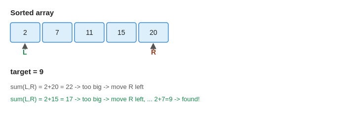
Java pseudocode
Two Sum II (sorted array)
int[] findTwoSumIndices(int[] sortedNumbers, int targetValue) {
// leftIndex starts at the smallest value, rightIndex at the largest value
int leftIndex = 0;
int rightIndex = sortedNumbers.length - 1;
while (leftIndex < rightIndex) {
int currentSum = sortedNumbers[leftIndex] + sortedNumbers[rightIndex];
if (currentSum == targetValue) {
// found the pair; problem wants 1-indexed positions
return new int[]{leftIndex + 1, rightIndex + 1};
} else if (currentSum < targetValue) {
// sum too small -> we need a bigger number -> move left pointer right
leftIndex++;
} else {
// sum too large -> we need a smaller number -> move right pointer left
rightIndex--;
}
}
return new int[]{-1, -1}; // no valid pair found
}Container With Most Water
int findMaxWaterArea(int[] wallHeights) {
int leftIndex = 0;
int rightIndex = wallHeights.length - 1;
int bestAreaFound = 0;
while (leftIndex < rightIndex) {
int currentWidth = rightIndex - leftIndex;
// container's water level is capped by the SHORTER of the two walls
int shorterWallHeight = Math.min(wallHeights[leftIndex], wallHeights[rightIndex]);
int currentArea = currentWidth * shorterWallHeight;
bestAreaFound = Math.max(bestAreaFound, currentArea);
// always move the pointer at the shorter wall:
// moving the taller wall can never increase the area (still capped by the short one)
if (wallHeights[leftIndex] < wallHeights[rightIndex]) {
leftIndex++;
} else {
rightIndex--;
}
}
return bestAreaFound;
}Practice: Two Sum II, Container With Most Water, 3Sum, Trapping Rain Water.
2. Hashing / Frequency Counting
Hashing is less a single algorithm and more a foundational tool: using a HashMap (or a fixed-size array when the key space is small, like lowercase letters) to achieve O(1) average-time lookups, insertions, and updates. This pattern shows up constantly in problems involving counting, grouping, or checking for existence, because it converts what would otherwise be an O(n) linear search into a constant-time operation.
The most direct application is frequency counting: iterate through a collection once, and for each element, increment its count in a map. This single pass gives you complete information about how often everything appears, which you can then use to answer questions like 'is this a valid anagram' (do two strings have identical character frequency profiles) or 'what are the top K most frequent elements.'
A more advanced use is grouping by a derived key. In 'Group Anagrams,' two words are anagrams of each other if and only if their sorted character sequences are identical. So you compute a 'canonical key' for each word (its sorted form) and use that key to bucket words into a HashMap<String, List<String>>. Words that produce the same key end up in the same group automatically, with no need to compare every pair of words directly — an approach that would be O(n^2).
For 'Top K Frequent Elements,' after building the frequency map, you can either sort by frequency (O(n log n)) or use a clever bucket-sort trick: since frequency can never exceed the array's length, you create an array of buckets indexed by frequency count, and place each element into the bucket matching its frequency. Reading buckets from highest frequency down instantly gives you the top K elements in O(n) time. Recognize hashing whenever a problem needs fast membership checks, deduplication, counting, or grouping by some computed property.
How it works — visually
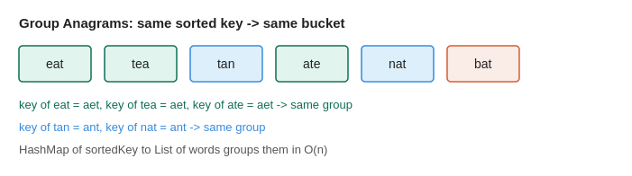
Java pseudocode
Group Anagrams
List<List<String>> groupAllAnagrams(String[] inputWords) {
// maps a canonical sorted-letter key -> list of original words sharing that key
Map<String, List<String>> anagramGroups = new HashMap<>();
for (String currentWord : inputWords) {
char[] wordLetters = currentWord.toCharArray();
Arrays.sort(wordLetters);
String sortedKey = new String(wordLetters); // anagrams share this same sorted key
anagramGroups.computeIfAbsent(sortedKey, key -> new ArrayList<>()).add(currentWord);
}
return new ArrayList<>(anagramGroups.values());
}Practice: Group Anagrams, Longest Consecutive Sequence, Top K Frequent Elements, Valid Anagram.
3. Sliding Window — Fixed Size
The fixed-size sliding window pattern is used whenever a problem specifies a constant window length K and asks you to compute something — a sum, average, maximum, or count — for every possible window of that size as it slides across the array. The naive approach recomputes the answer from scratch for each window position, costing O(n*k) time. The sliding window technique instead updates the answer incrementally in O(1) per shift, bringing the total time down to O(n).
The mechanism works in two phases. First, you compute the initial answer for the very first window — for example, summing the first K elements. Second, you 'slide' the window one position at a time: as the window moves right by one, exactly one element leaves the window on the left, and exactly one new element enters on the right. Instead of resumming everything, you simply subtract the value that left and add the value that entered. This single arithmetic update replaces an entire re-scan of K elements, which is where the efficiency gain comes from.
For example, in 'Maximum Average Subarray I,' you first sum the first K elements to get your baseline window sum. Then, as you slide forward, each new window's sum is simply the previous sum minus the element that just left, plus the element that just entered. You track the maximum sum encountered across all slides, and divide by K at the end to get the average.
A slightly more advanced variant appears in problems like 'K Radius Subarray Averages,' where the window is centered on each index rather than anchored to the left — but the same slide-and-adjust logic applies, just with a window size of 2k+1. Recognize the fixed-size sliding window whenever the problem explicitly gives you a window size K and asks for a per-window aggregate computed across the whole array.
How it works — visually
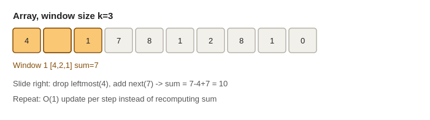
Java pseudocode
Maximum Average Subarray I
double findMaxAverageOfWindow(int[] inputNumbers, int windowSize) {
// build the sum of the very first window
int currentWindowSum = 0;
for (int index = 0; index < windowSize; index++) {
currentWindowSum += inputNumbers[index];
}
int highestWindowSum = currentWindowSum;
// slide the window one step at a time across the rest of the array
for (int index = windowSize; index < inputNumbers.length; index++) {
// remove the element leaving on the left, add the element entering on the right
currentWindowSum += inputNumbers[index] - inputNumbers[index - windowSize];
highestWindowSum = Math.max(highestWindowSum, currentWindowSum);
}
return (double) highestWindowSum / windowSize;
}K Radius Subarray Averages
int[] findRadiusWindowAverages(int[] inputNumbers, int radiusValue) {
int arrayLength = inputNumbers.length;
int[] resultAverages = new int[arrayLength];
Arrays.fill(resultAverages, -1); // default: not enough elements on one side
int windowSize = 2 * radiusValue + 1;
if (windowSize > arrayLength) return resultAverages;
// sum of the very first full window (centered at index = radiusValue)
long currentWindowSum = 0;
for (int index = 0; index < windowSize; index++) {
currentWindowSum += inputNumbers[index];
}
resultAverages[radiusValue] = (int) (currentWindowSum / windowSize);
// slide the window forward, one center index at a time
for (int index = windowSize; index < arrayLength; index++) {
currentWindowSum += inputNumbers[index] - inputNumbers[index - windowSize];
resultAverages[index - radiusValue] = (int) (currentWindowSum / windowSize);
}
return resultAverages;
}Practice: Maximum Average Subarray I, Maximum Sum Subarray of Size K, Diet Plan Performance, K Radius Subarray Averages.
4. Prefix Sum
Prefix sum is one of the simplest yet most powerful techniques for answering range-based questions efficiently. The core idea is to trade a small amount of preprocessing time and space for dramatically faster queries. Instead of recalculating the sum of a subarray every time you're asked for it — which takes O(n) time per query — you build a helper array once, in O(n) time total, and then answer every subsequent range-sum query in O(1).
Here's the mechanism: you create a new array called the prefix array, where each position i stores the cumulative sum of all elements from the start of the original array up to (but not including) index i. So prefixSums[0] is 0 (sum of nothing), prefixSums[1] is inputNumbers[0], prefixSums[2] is inputNumbers[0]+inputNumbers[1], and so on. Once this array exists, the sum of any subarray from index i to j (inclusive) can be computed instantly using the formula prefixSums[j+1] minus prefixSums[i]. This works because prefixSums[j+1] contains everything up to j, and subtracting prefixSums[i] removes everything before i, leaving exactly the range you want.
This pattern becomes especially powerful when combined with a HashMap. For problems like 'count the number of subarrays that sum to exactly K,' you iterate through the array while maintaining a running sum, and at each step you check whether (currentSum - K) has been seen before. If it has, that means there's an earlier point in the array where, if you had stopped the running sum there, the difference between then and now would equal K — meaning you've found a valid subarray. This turns an O(n^2) brute-force search into a single O(n) pass.
Recognize this pattern whenever a problem repeatedly asks about sums (or products, XORs, or counts) over a range, especially when the array itself doesn't change between queries.
How it works — visually
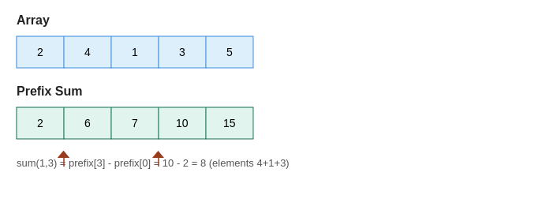
Java pseudocode
Range Sum Query — Immutable
class RangeSumQuery {
int[] prefixSums;
RangeSumQuery(int[] inputNumbers) {
// prefixSums[i] = sum of all elements before index i
prefixSums = new int[inputNumbers.length + 1];
for (int index = 0; index < inputNumbers.length; index++) {
prefixSums[index + 1] = prefixSums[index] + inputNumbers[index];
}
}
int sumRange(int leftIndex, int rightIndex) {
// sum(left..right) = everything up to "right" minus everything before "left"
return prefixSums[rightIndex + 1] - prefixSums[leftIndex];
}
}Subarray Sum Equals K
int countSubarraysWithTargetSum(int[] inputNumbers, int targetSum) {
// maps a prefix-sum value -> how many times that prefix sum has occurred so far
Map<Integer, Integer> prefixSumFrequency = new HashMap<>();
prefixSumFrequency.put(0, 1); // an empty prefix (sum = 0) has occurred once
int runningSum = 0;
int matchingSubarrayCount = 0;
for (int currentValue : inputNumbers) {
runningSum += currentValue;
// if (runningSum - targetSum) occurred before, that earlier point marks
// the start of a subarray whose sum is exactly targetSum
matchingSubarrayCount += prefixSumFrequency.getOrDefault(runningSum - targetSum, 0);
prefixSumFrequency.put(runningSum, prefixSumFrequency.getOrDefault(runningSum, 0) + 1);
}
return matchingSubarrayCount;
}Practice: Two Sum, Subarray Sum Equals K, Continuous Subarray Sum, Range Sum Query – Immutable.
5. Fast & Slow Pointers (Floyd's Cycle Detection)
The fast and slow pointers technique, often called 'Floyd's Cycle Detection' or the 'tortoise and hare' algorithm, uses two pointers moving through a sequence at different speeds to detect cycles or locate structural midpoints — all without needing extra memory to track visited nodes.
The setup is simple: both pointers start at the same position. The slow pointer advances one step at a time, while the fast pointer advances two steps at a time. If the underlying structure — most commonly a linked list — has no cycle, the fast pointer will simply reach the end (null) first, and you can conclude there's no loop. But if there IS a cycle, something interesting happens: the fast pointer, being twice as quick, will eventually 'lap' the slow pointer from behind and the two will land on the exact same node at the same time. This guaranteed meeting is the mathematical basis for cycle detection — since both pointers are moving forward through a finite loop, the gap between them shrinks by one node every step (from fast's perspective) until it hits zero.
The same two-speed idea finds the middle of a linked list without knowing its length in advance: when the fast pointer reaches the end, the slow pointer — having moved at half the speed — is necessarily sitting at the midpoint. This avoids the need for a first pass just to count nodes.
This pattern also generalizes beyond linked lists to any sequence defined by repeatedly applying a function, such as the 'Happy Number' problem, where you repeatedly replace a number with the sum of the squares of its digits. If this process cycles instead of reaching 1, applying fast and slow pointers to the sequence of results will detect that cycle exactly the same way. Recognize this pattern whenever you need cycle detection, midpoint-finding, or duplicate detection in a sequence, and you want to avoid the O(n) extra space that a visited-set approach would require.
How it works — visually
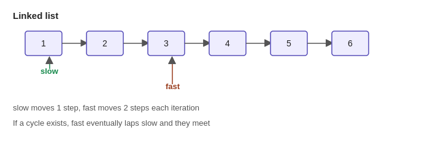
Java pseudocode
Happy Number
boolean isHappyNumber(int candidateNumber) {
int slowValue = candidateNumber;
int fastValue = candidateNumber;
do {
slowValue = sumOfSquaredDigits(slowValue); // 1 step
fastValue = sumOfSquaredDigits(sumOfSquaredDigits(fastValue)); // 2 steps
} while (slowValue != fastValue); // they meet once a cycle is entered
return slowValue == 1; // if the cycle they met in contains 1, it's happy
}
int sumOfSquaredDigits(int inputNumber) {
int digitSquareSum = 0;
while (inputNumber > 0) {
int currentDigit = inputNumber % 10;
digitSquareSum += currentDigit * currentDigit;
inputNumber /= 10;
}
return digitSquareSum;
}Practice: Linked List Cycle, Middle of the Linked List, Remove Duplicates From Sorted Array, Happy Number.
6. Sliding Window — Variable Size
Unlike the fixed-size version, the variable-size sliding window grows and shrinks dynamically based on whether the current window satisfies some condition. This pattern is the go-to approach for problems phrased as 'find the longest/shortest substring or subarray such that some property holds' — for example, no repeating characters, at most K distinct elements, or containing all characters of another string.
The technique uses two pointers, leftBoundary and rightBoundary, both starting at the beginning of the array or string. You expand the window by moving rightBoundary forward, adding the new element into your window's tracked state (often a frequency map or count). After each expansion, you check: does the window still satisfy the required condition? If yes, you might update your 'best answer so far' (for longest-window problems). If the window has become invalid — for example, a character now appears twice when the problem requires uniqueness — you shrink the window from the left, removing elements one at a time and updating your state, until the window becomes valid again.
This 'expand right, shrink left when needed' rhythm guarantees that both pointers only ever move forward, never backward, which is what keeps the overall time complexity at O(n) even though it looks like nested logic. Each element is added to the window exactly once and removed at most once.
A particularly elegant example is 'Longest Substring Without Repeating Characters,' where you track the last-seen index of each character. When you encounter a character that's already in the window, instead of shrinking one step at a time, you can jump leftBoundary directly past the duplicate's previous position. For 'minimum window substring' problems, you track how many required characters are currently satisfied, expanding until all requirements are met, then aggressively shrinking to find the smallest valid window before continuing to expand again. Recognize this pattern whenever the window size isn't given upfront and instead must be discovered based on a validity condition.
How it works — visually
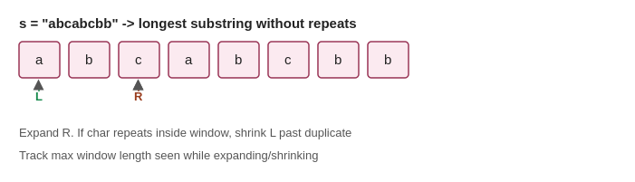
Java pseudocode
Longest Substring Without Repeating Characters
int findLongestUniqueSubstring(String inputText) {
// maps each character -> the most recent index where it appeared
Map<Character, Integer> lastSeenIndexOf = new HashMap<>();
int leftBoundary = 0;
int longestLengthFound = 0;
for (int rightBoundary = 0; rightBoundary < inputText.length(); rightBoundary++) {
char currentCharacter = inputText.charAt(rightBoundary);
// if this character was already seen INSIDE the current window, shrink past it
if (lastSeenIndexOf.containsKey(currentCharacter)
&& lastSeenIndexOf.get(currentCharacter) >= leftBoundary) {
leftBoundary = lastSeenIndexOf.get(currentCharacter) + 1;
}
lastSeenIndexOf.put(currentCharacter, rightBoundary);
longestLengthFound = Math.max(longestLengthFound, rightBoundary - leftBoundary + 1);
}
return longestLengthFound;
}Minimum Window Substring
String findMinimumWindowSubstring(String sourceText, String requiredChars) {
if (requiredChars.isEmpty()) return "";
// count how many of each character we still need
Map<Character, Integer> neededCharCounts = new HashMap<>();
for (char requiredChar : requiredChars.toCharArray()) {
neededCharCounts.merge(requiredChar, 1, Integer::sum);
}
Map<Character, Integer> currentWindowCounts = new HashMap<>();
int leftBoundary = 0;
int distinctCharsRequired = neededCharCounts.size();
int distinctCharsSatisfied = 0;
int shortestLengthFound = Integer.MAX_VALUE;
int shortestWindowStart = 0;
for (int rightBoundary = 0; rightBoundary < sourceText.length(); rightBoundary++) {
char incomingChar = sourceText.charAt(rightBoundary);
currentWindowCounts.merge(incomingChar, 1, Integer::sum);
// this character's requirement is now exactly satisfied
if (neededCharCounts.containsKey(incomingChar)
&& currentWindowCounts.get(incomingChar).intValue() == neededCharCounts.get(incomingChar).intValue()) {
distinctCharsSatisfied++;
}
// once ALL required characters are satisfied, shrink from the left to find the smallest valid window
while (distinctCharsSatisfied == distinctCharsRequired) {
if (rightBoundary - leftBoundary + 1 < shortestLengthFound) {
shortestLengthFound = rightBoundary - leftBoundary + 1;
shortestWindowStart = leftBoundary;
}
char outgoingChar = sourceText.charAt(leftBoundary);
currentWindowCounts.put(outgoingChar, currentWindowCounts.get(outgoingChar) - 1);
if (neededCharCounts.containsKey(outgoingChar)
&& currentWindowCounts.get(outgoingChar) < neededCharCounts.get(outgoingChar)) {
distinctCharsSatisfied--; // window no longer satisfies this character's requirement
}
leftBoundary++;
}
}
return shortestLengthFound == Integer.MAX_VALUE ? "" :
sourceText.substring(shortestWindowStart, shortestWindowStart + shortestLengthFound);
}Practice: Longest Substring Without Repeating Characters, Longest Repeating Character Replacement, Minimum Window Substring, Permutation in String.
7. Binary Search (on Arrays)
Binary search is the classic technique for finding a target value in a sorted array in O(log n) time by repeatedly cutting the search space in half. Where a linear scan checks every element one by one (O(n)), binary search leverages the sorted property to eliminate half of the remaining candidates with every single comparison, which is why it scales so well even for enormous arrays.
The mechanism uses two boundary pointers, leftBoundary and rightBoundary, marking the current range being searched, and computes a midpoint between them. You compare the value at the midpoint to your target: if they're equal, you're done. If the midpoint's value is smaller than the target, you know the entire left half (including the midpoint) can be discarded, since everything there is even smaller — so you move leftBoundary to just past the midpoint. If the midpoint's value is larger, symmetric logic applies and you shrink rightBoundary. This process repeats, roughly halving the search space every iteration, until the target is found or the range becomes empty.
A common and important variation is searching a rotated sorted array, where the array was sorted but then rotated at some unknown pivot (e.g., [4,5,6,7,0,1,2]). The array is no longer globally sorted, but at every step, at least one half of the current range IS guaranteed to be properly sorted. The trick is to first determine which half is sorted by comparing the endpoints, and then check whether the target could plausibly lie within that sorted half's range. If it does, search there; otherwise, search the other half.
Binary search also generalizes to finding boundaries rather than exact matches — for example, 'find the first and last position of a target in a sorted array' runs two separate binary searches, one biased to keep searching left after finding a match (to find the first occurrence) and one biased to keep searching right (to find the last). Recognize binary search whenever the data is sorted, or when a monotonic 'yes/no' property lets you meaningfully discard half the search space at each step.
How it works — visually
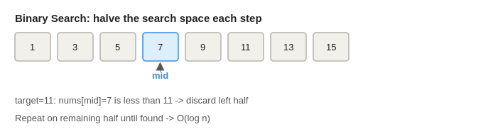
Java pseudocode
Standard Binary Search
int searchSortedArray(int[] sortedNumbers, int targetValue) {
int leftBoundary = 0;
int rightBoundary = sortedNumbers.length - 1;
while (leftBoundary <= rightBoundary) {
int midpointIndex = leftBoundary + (rightBoundary - leftBoundary) / 2;
if (sortedNumbers[midpointIndex] == targetValue) {
return midpointIndex; // found it
} else if (sortedNumbers[midpointIndex] < targetValue) {
leftBoundary = midpointIndex + 1; // discard the left half, it's too small
} else {
rightBoundary = midpointIndex - 1; // discard the right half, it's too big
}
}
return -1; // target not present
}Search in Rotated Sorted Array
int searchRotatedArray(int[] rotatedNumbers, int targetValue) {
int leftBoundary = 0;
int rightBoundary = rotatedNumbers.length - 1;
while (leftBoundary <= rightBoundary) {
int midpointIndex = leftBoundary + (rightBoundary - leftBoundary) / 2;
if (rotatedNumbers[midpointIndex] == targetValue) {
return midpointIndex;
}
// determine which half is properly sorted
if (rotatedNumbers[leftBoundary] <= rotatedNumbers[midpointIndex]) {
// left half [leftBoundary..midpointIndex] is sorted
if (rotatedNumbers[leftBoundary] <= targetValue && targetValue < rotatedNumbers[midpointIndex]) {
rightBoundary = midpointIndex - 1; // target is in the sorted left half
} else {
leftBoundary = midpointIndex + 1; // target must be in the right half
}
} else {
// right half [midpointIndex..rightBoundary] is sorted
if (rotatedNumbers[midpointIndex] < targetValue && targetValue <= rotatedNumbers[rightBoundary]) {
leftBoundary = midpointIndex + 1; // target is in the sorted right half
} else {
rightBoundary = midpointIndex - 1; // target must be in the left half
}
}
}
return -1;
}Practice: Binary Search, Search in Rotated Sorted Array, Find First and Last Position, Find Peak Element.
8. Kadane's Algorithm (Maximum Subarray)
Kadane's Algorithm is a dynamic programming technique that finds the maximum-sum contiguous subarray in a single linear pass. It solves a problem that looks like it should require checking every possible subarray — an O(n^2) or worse approach — in just O(n) time by making one clever local decision at each step.
The insight behind Kadane's is this: as you walk through the array, you maintain a running variable representing 'the best sum of a subarray that ends exactly at the current position.' At each new element, you have exactly two choices: either extend the previous subarray by including this new element, or abandon everything before it and start a brand new subarray beginning right here. You choose whichever option gives the larger sum. Mathematically, this is expressed as bestSumEndingHere = max(currentElement, bestSumEndingHere + currentElement). The intuition is that if everything accumulated so far is dragging your sum down (i.e., it's negative), you're better off cutting your losses and starting fresh.
While you're computing this local 'best ending here' value at each step, you also keep track of the global maximum seen across the entire traversal, since the overall best subarray might not be the one that happens to end at the very last index.
This same core idea extends naturally to related problems. For 'maximum product subarray,' you need to track both the running maximum AND running minimum, because multiplying by a negative number can flip a very negative product into the new maximum. For 'best time to buy and sell stock,' the pattern becomes tracking the minimum price seen so far and computing the best possible profit if you sold today — which is a disguised version of the same 'extend or restart' logic. Recognize Kadane's whenever a problem asks for an optimal contiguous run, streak, or window derived from array values, and a brute-force check of every subarray would be too slow.
How it works — visually
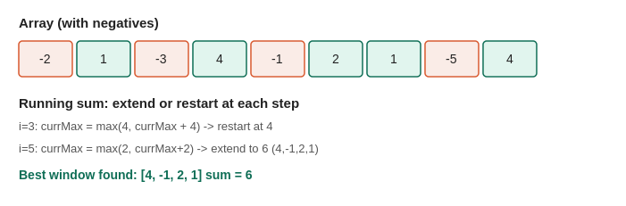
Java pseudocode
Best Time to Buy and Sell Stock
int findMaxStockProfit(int[] dailyPrices) {
int lowestPriceSoFar = dailyPrices[0];
int bestProfitSoFar = 0;
for (int currentPrice : dailyPrices) {
lowestPriceSoFar = Math.min(lowestPriceSoFar, currentPrice);
bestProfitSoFar = Math.max(bestProfitSoFar, currentPrice - lowestPriceSoFar);
}
return bestProfitSoFar;
}Practice: Maximum Subarray, Maximum Sum Circular Subarray, Maximum Product Subarray, Best Time to Buy and Sell Stock.
9. Merge Intervals
The merge intervals pattern handles any problem involving ranges that might overlap — scheduling meetings, merging time blocks, or inserting a new range into an existing set. The technique relies on a simple but crucial first step: sorting the intervals by their start time. Once sorted, you can determine overlaps with a single linear sweep, rather than comparing every pair of intervals against each other.
After sorting, you walk through the intervals one at a time, maintaining a 'currently merged' interval. For each new interval, you compare its start time to the end time of the last merged interval. If the new interval's start is less than or equal to the last merged interval's end, they overlap (or touch), so you merge them by extending the end time to whichever is larger. If the new interval's start comes strictly after the last merged interval's end, there's a gap — meaning no overlap — so you close off the previous merged interval and begin a new one with the current interval.
A related but distinct problem is 'Non-overlapping Intervals,' which asks for the minimum number of intervals to remove so that none of the remaining ones overlap. Here, the greedy insight is to sort by END time instead of start time, and greedily keep an interval whenever it starts at or after the end of the last interval you decided to keep. Any interval that would overlap gets counted as a removal. Sorting by end time (rather than start time) is what makes the greedy choice provably optimal here — you always want to keep the interval that frees up the earliest possible time for future intervals.
'Meeting Rooms II,' which asks for the minimum number of conference rooms needed to host all given meetings without conflict, uses a clever variant: separate the start times and end times into two independently sorted arrays, then sweep through them together. Every time a meeting starts before the earliest currently-ongoing meeting ends, you need an additional room; every time a meeting ends, you free up a room. Tracking the maximum simultaneous room count gives the answer. Recognize the merge intervals pattern whenever a problem's core objects are ranges (start, end) and questions concern their overlap, union, or resource conflicts.
How it works — visually
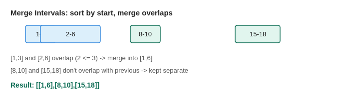
Java pseudocode
Merge Intervals
int[][] mergeOverlappingIntervals(int[][] inputIntervals) {
// sort by start time so overlaps can be found with a single linear sweep
Arrays.sort(inputIntervals, (firstInterval, secondInterval) -> firstInterval[0] - secondInterval[0]);
List<int[]> mergedIntervals = new ArrayList<>();
for (int[] currentInterval : inputIntervals) {
int lastMergedIndex = mergedIntervals.size() - 1;
if (mergedIntervals.isEmpty() || mergedIntervals.get(lastMergedIndex)[1] < currentInterval[0]) {
// no overlap with the last merged interval -> start a new group
mergedIntervals.add(currentInterval);
} else {
// overlaps -> extend the last merged interval's end time if needed
mergedIntervals.get(lastMergedIndex)[1] =
Math.max(mergedIntervals.get(lastMergedIndex)[1], currentInterval[1]);
}
}
return mergedIntervals.toArray(new int[mergedIntervals.size()][]);
}Meeting Rooms II
int findMinimumMeetingRooms(int[][] meetingIntervals) {
int meetingCount = meetingIntervals.length;
int[] sortedStartTimes = new int[meetingCount];
int[] sortedEndTimes = new int[meetingCount];
for (int index = 0; index < meetingCount; index++) {
sortedStartTimes[index] = meetingIntervals[index][0];
sortedEndTimes[index] = meetingIntervals[index][1];
}
Arrays.sort(sortedStartTimes);
Arrays.sort(sortedEndTimes);
int roomsInUse = 0;
int maxRoomsNeeded = 0;
int endTimePointer = 0;
for (int startPointer = 0; startPointer < meetingCount; startPointer++) {
if (sortedStartTimes[startPointer] < sortedEndTimes[endTimePointer]) {
// a new meeting starts before the earliest ongoing meeting ends -> need another room
roomsInUse++;
} else {
// the earliest ongoing meeting has ended -> free up a room
roomsInUse--;
endTimePointer++;
}
maxRoomsNeeded = Math.max(maxRoomsNeeded, roomsInUse);
}
return maxRoomsNeeded;
}Practice: Merge Intervals, Insert Interval, Non-overlapping Intervals, Meeting Rooms II.
10. Monotonic Stack
A monotonic stack is a stack that maintains its elements in strictly increasing or strictly decreasing order at all times, by popping off elements that would violate this order before pushing new ones. This structure is the standard tool for any problem asking about the 'next greater element,' 'next smaller element,' or similar boundary-finding questions, and it solves them in O(n) total time even though it might look like it involves nested loops.
Here's why it's O(n) despite the appearance of a loop inside a loop: although you might pop multiple elements at a single step, each element is pushed onto the stack exactly once and popped at most once across the entire algorithm. So the total number of push and pop operations across the whole run is bounded by 2n, not n squared.
The mechanism works like this: you iterate through the array. Before pushing the current element onto the stack, you check whether it violates monotonicity with the current top of the stack — for a 'next greater element' problem, this means checking if the current element is bigger than the element at the top of the stack. If it is, you pop that top element, because you've just found its answer: the current element is precisely the 'next greater element' it was looking for. You keep popping and recording answers until the stack's top no longer violates the order, then you push the current element and continue.
This same idea extends to more complex geometric problems like 'Largest Rectangle in Histogram,' where you maintain a stack of increasing bar heights. When you encounter a bar shorter than the stack's top, you know the top bar's rectangle can't extend any further right, so you pop it and calculate the maximum rectangle it could have formed, using the new stack top as the left boundary. Recognize the monotonic stack pattern whenever a problem involves finding the nearest bigger or smaller element (in either direction) efficiently, or computing areas/spans bounded by such elements.
How it works — visually
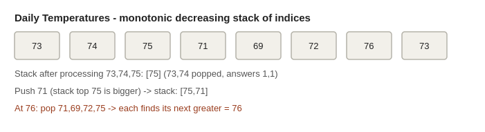
Java pseudocode
Daily Temperatures
int[] findDaysUntilWarmer(int[] dailyTemperatures) {
int totalDays = dailyTemperatures.length;
int[] daysToWaitResult = new int[totalDays];
// stack holds indices of days whose "warmer day" hasn't been found yet
// (temperatures at these indices are in decreasing order from bottom to top)
Deque<Integer> decreasingTempStack = new ArrayDeque<>();
for (int currentDay = 0; currentDay < totalDays; currentDay++) {
// pop and resolve any earlier day that is colder than today
while (!decreasingTempStack.isEmpty()
&& dailyTemperatures[currentDay] > dailyTemperatures[decreasingTempStack.peek()]) {
int previousColderDay = decreasingTempStack.pop();
daysToWaitResult[previousColderDay] = currentDay - previousColderDay;
}
decreasingTempStack.push(currentDay);
}
return daysToWaitResult;
}Largest Rectangle in Histogram
int findLargestRectangleArea(int[] barHeights) {
Deque<Integer> increasingHeightStack = new ArrayDeque<>(); // stores indices, increasing heights
int largestAreaFound = 0;
int totalBars = barHeights.length;
for (int currentIndex = 0; currentIndex <= totalBars; currentIndex++) {
// use height 0 as a sentinel at the end to flush out remaining bars
int currentHeight = (currentIndex == totalBars) ? 0 : barHeights[currentIndex];
while (!increasingHeightStack.isEmpty() && barHeights[increasingHeightStack.peek()] > currentHeight) {
int poppedBarHeight = barHeights[increasingHeightStack.pop()];
// width extends from the new stack top (exclusive) to currentIndex (exclusive)
int rectangleWidth = increasingHeightStack.isEmpty()
? currentIndex
: currentIndex - increasingHeightStack.peek() - 1;
largestAreaFound = Math.max(largestAreaFound, poppedBarHeight * rectangleWidth);
}
increasingHeightStack.push(currentIndex);
}
return largestAreaFound;
}Practice: Next Greater Element I, Daily Temperatures, Largest Rectangle in Histogram, Remove K Digits.
11. Cyclic Sort
Cyclic Sort is a specialized in-place sorting technique that applies when you're given an array containing numbers in a known, limited range — typically 1 to n, or 0 to n-1, matching the array's own length. Rather than using a general-purpose sort like quicksort or mergesort (which take O(n log n)), cyclic sort exploits the fact that you already know exactly where each number SHOULD go, letting you sort the array in O(n) time using only a single pass with swaps.
The core idea: if the array is supposed to contain numbers 1 through n, then the number 'v' belongs at index 'v-1' (adjusting for 0-based indexing). So you walk through the array with an index, and at each position, you check whether the number currently sitting there is actually the correct number for that position. If it's not, you swap it directly to the index where IT belongs, and then re-check the new number that just landed at the current position (since a swap could put yet another out-of-place number there). You only move forward once the number at the current position is confirmed correct. This 'keep swapping until this slot is right, then move on' logic guarantees that every swap places at least one number into its final correct position, which bounds the total number of swaps at O(n).
This pattern is especially powerful for a family of 'missing number' and 'duplicate number' problems. Once the array has been cyclically sorted (or as close to sorted as possible given missing/duplicate values), a single additional linear scan reveals the answer: any index where the value doesn't equal index+1 tells you that index+1 is a missing number, or that the value there is a number appearing more than once (since its rightful spot got overwritten or was never reached).
Recognize cyclic sort whenever a problem gives you an array with values constrained to a specific range tied to the array's length (1 to n, 0 to n-1, etc.) and asks you to find a missing number, a duplicate number, or all missing/duplicate numbers — especially when the problem also asks for O(n) time and O(1) extra space.
How it works — visually
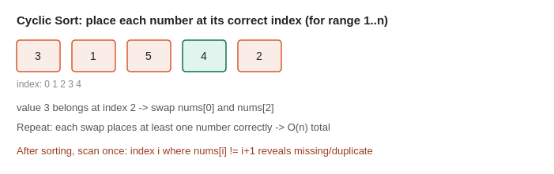
Java pseudocode
Cyclic Sort (core template)
void performCyclicSort(int[] inputNumbers) {
int currentIndex = 0;
while (currentIndex < inputNumbers.length) {
// the number at currentIndex "belongs" at index (value - 1)
int correctPositionForValue = inputNumbers[currentIndex] - 1;
if (inputNumbers[currentIndex] != inputNumbers[correctPositionForValue]) {
// wrong number here -> swap it to where it belongs, then re-check this slot
swapArrayValues(inputNumbers, currentIndex, correctPositionForValue);
} else {
currentIndex++; // this slot already holds its correct value, move forward
}
}
}
void swapArrayValues(int[] inputNumbers, int firstIndex, int secondIndex) {
int temporaryValue = inputNumbers[firstIndex];
inputNumbers[firstIndex] = inputNumbers[secondIndex];
inputNumbers[secondIndex] = temporaryValue;
}Find the Missing Number (0 to n)
int findMissingNumber(int[] inputNumbers) {
int currentIndex = 0;
int totalCount = inputNumbers.length;
while (currentIndex < totalCount) {
int correctPositionForValue = inputNumbers[currentIndex];
// only swap if the value belongs inside the array's index range
if (inputNumbers[currentIndex] < totalCount
&& inputNumbers[currentIndex] != inputNumbers[correctPositionForValue]) {
swapArrayValues(inputNumbers, currentIndex, correctPositionForValue);
} else {
currentIndex++;
}
}
// scan for the first index whose value doesn't match -> that index is the missing number
for (currentIndex = 0; currentIndex < totalCount; currentIndex++) {
if (inputNumbers[currentIndex] != currentIndex) {
return currentIndex;
}
}
return totalCount; // all of 0..n-1 present, so n itself must be missing
}
void swapArrayValues(int[] inputNumbers, int firstIndex, int secondIndex) {
int temporaryValue = inputNumbers[firstIndex];
inputNumbers[firstIndex] = inputNumbers[secondIndex];
inputNumbers[secondIndex] = temporaryValue;
}Practice: Missing Number, Find All Numbers Disappeared in an Array, Find the Duplicate Number, First Missing Positive.
12. Heap / Priority Queue
A heap (implemented in Java as PriorityQueue) is a specialized tree-based data structure that always keeps the smallest (min-heap) or largest (max-heap) element instantly accessible at the top, while still allowing efficient insertion and removal in O(log n) time. This makes it the ideal tool for any problem involving 'top K' elements, streaming data, or repeatedly needing the current minimum or maximum as the dataset changes.
Java's PriorityQueue is a min-heap by default, meaning poll() always returns the smallest element currently in the queue. For 'top K largest' style problems, a clever trick is to maintain a min-heap that's capped at size K. As you process each new element, you add it to the heap; if the heap now exceeds size K, you remove (poll) the smallest element. Because the heap's smallest element gets evicted whenever the heap grows too large, only the K largest elements seen so far can possibly remain in the heap at any point. This means the heap never needs to hold more than K elements at once, keeping both time and space efficient — O(n log k) instead of O(n log n) for a full sort.
For 'Kth Largest Element in an Array,' this same size-K min-heap trick applies directly: after processing every element, the smallest item remaining in the heap (i.e., the top of the min-heap) is exactly the Kth largest element overall, since the heap holds precisely the K largest values and the smallest among them is, by definition, the Kth largest.
A more advanced application is 'Find Median from Data Stream,' which uses two heaps simultaneously: a max-heap holding the smaller half of all numbers seen so far, and a min-heap holding the larger half. By carefully rebalancing after every insertion so the two halves stay equal in size (or off by one), the median is always immediately available as either the top of the larger half, or the average of both tops. Recognize the heap pattern whenever a problem needs repeated access to a running minimum/maximum, or needs the K best/worst elements from a stream or large collection.
How it works — visually
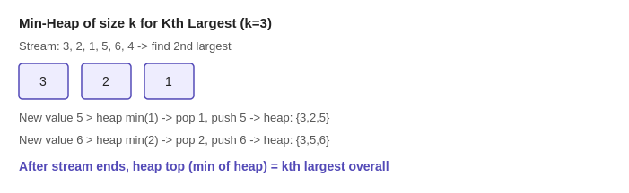
Java pseudocode
Merge K Sorted Lists
ListNode mergeSortedLists(ListNode[] sortedLists) {
// min-heap ordered by node value, so poll() always returns the smallest current head
PriorityQueue<ListNode> smallestHeadHeap = new PriorityQueue<>(
(firstNode, secondNode) -> firstNode.val - secondNode.val);
for (ListNode listHead : sortedLists) {
if (listHead != null) smallestHeadHeap.offer(listHead);
}
ListNode dummyHead = new ListNode(-1);
ListNode mergedTail = dummyHead;
while (!smallestHeadHeap.isEmpty()) {
ListNode smallestNode = smallestHeadHeap.poll();
mergedTail.next = smallestNode;
mergedTail = mergedTail.next;
// push the next node from the same list back into the heap
if (smallestNode.next != null) smallestHeadHeap.offer(smallestNode.next);
}
return dummyHead.next;
}Practice: Kth Largest Element, Top K Frequent Elements, Merge K Sorted Lists, Find Median from Data Stream.
13. Binary Search on Answer (Solution Space)
This is a more advanced and often surprising application of binary search: instead of searching through an array, you binary search over the range of possible answers to the problem itself. This applies whenever a problem asks you to 'minimize the maximum' or 'maximize the minimum' of some quantity, and you can write a yes/no feasibility check for any candidate answer.
The key requirement for this pattern to work is monotonicity: the feasibility of a candidate answer must be a one-directional property. That is, if a certain value X 'works' (satisfies the constraints), then every value bigger than X (or smaller, depending on the problem) must also work. This monotonic structure is exactly what lets you safely discard half of the candidate answers at each step, just like discarding half of a sorted array in classic binary search.
Consider 'Koko Eating Bananas': Koko needs to eat all the bananas within a limited number of hours, and you want to find the minimum eating speed that allows this. The search space isn't the array of banana piles — it's the range of possible eating speeds, from 1 up to the largest pile size. For any candidate speed, you can write a feasibility function: calculate how many hours it would take to eat every pile at that speed (using ceiling division per pile), and check if that's within the allowed hours. If a speed of X works, any speed faster than X will also work (monotonic), so you binary search on speed itself, narrowing toward the minimum working value.
The general template is: set 'low' and 'high' to the smallest and largest plausible answers. While low is less than high, compute mid, and run your feasibility check on it. If mid works, you try to find something even better by moving 'high' down to mid (assuming you're minimizing). If it doesn't work, you know you need to search higher, so move 'low' up past mid. When low equals high, you've converged on the answer. This pattern appears in shipping capacity problems, allocation problems, and any 'minimum viable threshold' question with a checkable, monotonic condition.
How it works — visually
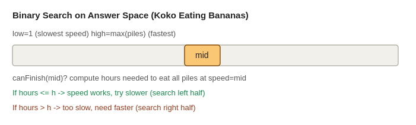
Java pseudocode
Koko Eating Bananas
int findMinimumEatingSpeed(int[] bananaPiles, int hoursAvailable) {
int slowestPossibleSpeed = 1;
int fastestPossibleSpeed = Arrays.stream(bananaPiles).max().getAsInt();
while (slowestPossibleSpeed < fastestPossibleSpeed) {
int candidateSpeed = slowestPossibleSpeed + (fastestPossibleSpeed - slowestPossibleSpeed) / 2;
if (canFinishAllPilesInTime(bananaPiles, hoursAvailable, candidateSpeed)) {
// this speed works -> try an even slower (smaller) speed
fastestPossibleSpeed = candidateSpeed;
} else {
// too slow -> need a faster speed
slowestPossibleSpeed = candidateSpeed + 1;
}
}
return slowestPossibleSpeed;
}
boolean canFinishAllPilesInTime(int[] bananaPiles, int hoursAvailable, int eatingSpeed) {
long totalHoursNeeded = 0;
for (int pileSize : bananaPiles) {
// ceiling division: hours needed to finish this pile at the given speed
totalHoursNeeded += (pileSize + eatingSpeed - 1) / eatingSpeed;
}
return totalHoursNeeded <= hoursAvailable;
}Practice: Koko Eating Bananas, Capacity to Ship Packages Within D Days, Minimum Number of Days to Make m Bouquets, Split Array Largest Sum.
14. Tree BFS (Level Order Traversal)
Tree BFS, also called level-order traversal, visits every node of a binary tree one depth level at a time — all nodes at depth 0 first, then all nodes at depth 1, then depth 2, and so on. It's the tree-specific application of the general BFS idea, and it's the natural approach whenever a problem's answer depends on the tree's level structure: printing the tree row by row, finding the minimum depth, computing the average value at each level, or finding the rightmost node visible from each level (right side view).
The mechanism is nearly identical to graph BFS, but simplified because a tree has no cycles and no need for a visited set — each node has exactly one parent, so there's no risk of revisiting it. You use a queue, starting with just the root node inside it. Then you repeatedly process the queue in 'rounds': at the start of each round, you record the current queue size (this tells you exactly how many nodes belong to the current level), then you dequeue that many nodes one by one, process each one, and enqueue their children. Because you captured the level's size before enqueueing any children, you know precisely when one level ends and the next begins — this is the key trick that lets you separate the output level by level rather than getting one flat, undifferentiated list.
For simpler tasks where you only need to know something about the deepest or widest level (like 'minimum depth,' which is the first leaf node BFS reaches), you don't even need to track level boundaries explicitly — you can simply return as soon as you find what you're looking for, since BFS guarantees it reaches shallower nodes before deeper ones.
Recognize tree BFS whenever a problem explicitly mentions 'level,' 'depth,' 'row,' or asks for the shortest path from the root to some target node in a tree (since BFS is guaranteed to find the node at minimum depth first, just like it finds the shortest path first in a general graph).
How it works — visually
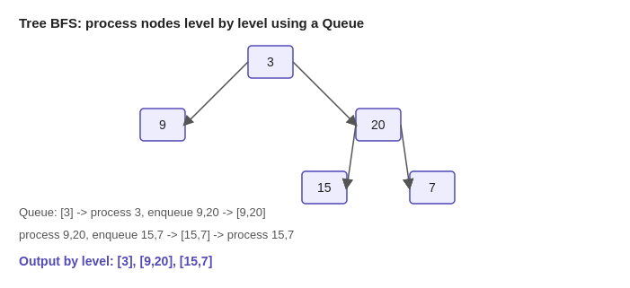
Java pseudocode
Binary Tree Level Order Traversal
List<List<Integer>> traverseByLevel(TreeNode rootNode) {
List<List<Integer>> resultByLevel = new ArrayList<>();
if (rootNode == null) return resultByLevel;
Queue<TreeNode> nodesToVisit = new LinkedList<>();
nodesToVisit.offer(rootNode);
while (!nodesToVisit.isEmpty()) {
int nodesAtThisLevel = nodesToVisit.size(); // captured BEFORE enqueueing children
List<Integer> currentLevelValues = new ArrayList<>();
for (int count = 0; count < nodesAtThisLevel; count++) {
TreeNode currentNode = nodesToVisit.poll();
currentLevelValues.add(currentNode.val);
if (currentNode.left != null) nodesToVisit.offer(currentNode.left);
if (currentNode.right != null) nodesToVisit.offer(currentNode.right);
}
resultByLevel.add(currentLevelValues);
}
return resultByLevel;
}Minimum Depth of Binary Tree
int findMinimumTreeDepth(TreeNode rootNode) {
if (rootNode == null) return 0;
Queue<TreeNode> nodesToVisit = new LinkedList<>();
nodesToVisit.offer(rootNode);
int currentDepth = 1;
while (!nodesToVisit.isEmpty()) {
int nodesAtThisLevel = nodesToVisit.size();
for (int count = 0; count < nodesAtThisLevel; count++) {
TreeNode currentNode = nodesToVisit.poll();
// BFS guarantees the FIRST leaf we reach is at the minimum depth
if (currentNode.left == null && currentNode.right == null) {
return currentDepth;
}
if (currentNode.left != null) nodesToVisit.offer(currentNode.left);
if (currentNode.right != null) nodesToVisit.offer(currentNode.right);
}
currentDepth++;
}
return currentDepth;
}Practice: Binary Tree Level Order Traversal, Minimum Depth of Binary Tree, Binary Tree Right Side View, Average of Levels in Binary Tree.
15. Tree DFS (Recursive Traversal)
Tree DFS explores a binary tree by diving as deep as possible down one branch before backtracking to try another, using the natural recursive structure of the tree itself. While tree BFS is ideal for level-based questions, tree DFS is the default choice for problems involving paths from root to leaf, aggregating values across a subtree, or computing structural properties like height, diameter, or balance — because these properties are naturally defined in terms of 'the answer for this node, given the answers for its children,' which is exactly what recursion expresses.
The mechanism relies on the call stack instead of an explicit queue: a recursive function is called on the root, and immediately calls itself on the left child, and then the right child (or in whatever order the problem requires). Each recursive call fully finishes — meaning it explores its entire subtree — before control returns to its caller. There are three canonical orderings, distinguished by WHEN you process the current node relative to its children: pre-order processes the node before recursing into children (useful for copying or serializing a tree top-down), in-order processes the left child, then the node, then the right child (useful for binary search trees, since this produces values in sorted order), and post-order processes both children before the node itself (useful when a node's answer depends on results already computed for its children, like height or diameter).
A common pattern within tree DFS is passing extra state down through recursive calls, such as the running sum on the path from the root ('Path Sum'), or having each recursive call RETURN a value that the parent combines with its sibling's result, such as returning the height of a subtree so the parent can compute its own height as 1 + max(left height, right height). This return-value-composition style is what makes problems like 'Diameter of Binary Tree' solvable in a single pass, since the diameter at any node can be computed the moment both of its children's heights are known.
Recognize tree DFS whenever a problem talks about root-to-leaf paths, subtree properties, or any computation where a node's answer is naturally built from its children's answers.
How it works — visually
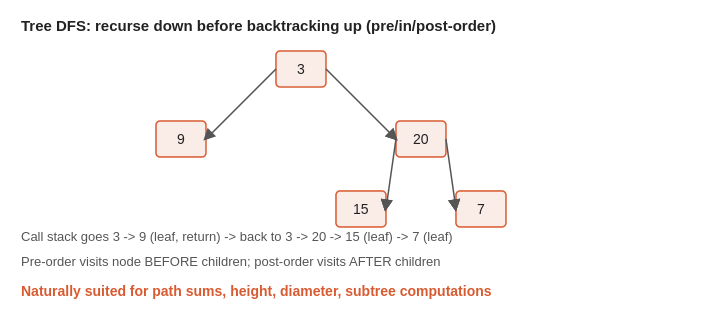
Java pseudocode
Path Sum (root-to-leaf, does a path sum to target?)
boolean hasRootToLeafPathSum(TreeNode currentNode, int remainingTargetSum) {
if (currentNode == null) return false;
// leaf node reached -> check if this path's total matches the target
if (currentNode.left == null && currentNode.right == null) {
return currentNode.val == remainingTargetSum;
}
int updatedRemainingSum = remainingTargetSum - currentNode.val;
// try the left subtree OR the right subtree
return hasRootToLeafPathSum(currentNode.left, updatedRemainingSum)
|| hasRootToLeafPathSum(currentNode.right, updatedRemainingSum);
}Diameter of Binary Tree (post-order, return-value composition)
int largestDiameterFound = 0;
int computeTreeDiameter(TreeNode rootNode) {
calculateSubtreeHeight(rootNode);
return largestDiameterFound;
}
int calculateSubtreeHeight(TreeNode currentNode) {
if (currentNode == null) return 0;
// post-order: fully compute both children's heights before using them
int leftSubtreeHeight = calculateSubtreeHeight(currentNode.left);
int rightSubtreeHeight = calculateSubtreeHeight(currentNode.right);
// the longest path THROUGH this node = combined height of both subtrees
largestDiameterFound = Math.max(largestDiameterFound, leftSubtreeHeight + rightSubtreeHeight);
// return this node's own height to its parent
return 1 + Math.max(leftSubtreeHeight, rightSubtreeHeight);
}Practice: Path Sum, Diameter of Binary Tree, Maximum Depth of Binary Tree, Invert Binary Tree.
16. Backtracking (Subsets, Permutations, Combinations)
Backtracking is a systematic way of exploring every possible combination of choices by building a solution incrementally, and abandoning ('backtracking out of') a path as soon as it's known to be invalid or once it's been fully explored. It's the standard approach for problems that ask you to generate all subsets, all permutations, all valid combinations, or all solutions satisfying some constraint (like N-Queens or Sudoku).
The mechanism is recursive, and it follows a repeating three-step rhythm at every node of an implicit decision tree: choose, explore, unchoose. First, you make a choice — for example, deciding to include the current number in your subset, or placing a queen on a particular square. Second, you recursively explore everything that follows from that choice, treating the rest of the problem as a smaller version of itself. Third, once that recursive branch is fully explored, you undo the choice you made (remove the number from the subset, remove the queen from the board) before trying the next alternative. This 'undo' step is what makes it backtracking rather than plain recursion — it lets you reuse the same partial solution and call stack to try a completely different path, without needing to build every path from scratch.
For 'Subsets,' at each element you have exactly two choices: include it or don't. This naturally forms a binary decision tree with 2^n leaves, each leaf representing one complete subset. For 'Permutations,' the choice at each level is which unused element to place next, and you track which elements have already been used so you don't repeat them within the same permutation. Many backtracking problems add a pruning step: if a partial solution can already be proven invalid (e.g., a queen under attack, a sum that's already exceeded the target), you stop exploring that branch immediately rather than continuing all the way down — this pruning is often what makes an otherwise exponential search practically fast enough.
Recognize backtracking whenever a problem says 'find all possible...' or 'generate every...' and the answer requires exploring a branching set of choices, especially when some choices can be eliminated early through constraints.
How it works — visually
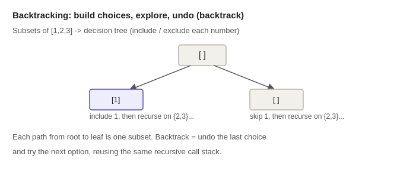
Java pseudocode
Subsets
List<List<Integer>> generateAllSubsets(int[] distinctNumbers) {
List<List<Integer>> allSubsetsFound = new ArrayList<>();
exploreSubsetChoices(distinctNumbers, 0, new ArrayList<>(), allSubsetsFound);
return allSubsetsFound;
}
void exploreSubsetChoices(int[] distinctNumbers, int startIndex,
List<Integer> currentSubset, List<List<Integer>> allSubsetsFound) {
// every partial path (including empty) is itself a valid subset
allSubsetsFound.add(new ArrayList<>(currentSubset));
for (int index = startIndex; index < distinctNumbers.length; index++) {
currentSubset.add(distinctNumbers[index]); // choose
exploreSubsetChoices(distinctNumbers, index + 1, currentSubset, allSubsetsFound); // explore
currentSubset.remove(currentSubset.size() - 1); // un-choose (backtrack)
}
}Permutations
List<List<Integer>> generateAllPermutations(int[] distinctNumbers) {
List<List<Integer>> allPermutationsFound = new ArrayList<>();
boolean[] valueAlreadyUsed = new boolean[distinctNumbers.length];
exploreOrderingChoices(distinctNumbers, new ArrayList<>(), valueAlreadyUsed, allPermutationsFound);
return allPermutationsFound;
}
void exploreOrderingChoices(int[] distinctNumbers, List<Integer> currentOrdering,
boolean[] valueAlreadyUsed, List<List<Integer>> allPermutationsFound) {
if (currentOrdering.size() == distinctNumbers.length) {
allPermutationsFound.add(new ArrayList<>(currentOrdering));
return;
}
for (int index = 0; index < distinctNumbers.length; index++) {
if (valueAlreadyUsed[index]) continue; // skip values already placed in this ordering
valueAlreadyUsed[index] = true;
currentOrdering.add(distinctNumbers[index]);
exploreOrderingChoices(distinctNumbers, currentOrdering, valueAlreadyUsed, allPermutationsFound);
currentOrdering.remove(currentOrdering.size() - 1); // undo
valueAlreadyUsed[index] = false; // undo
}
}Practice: Subsets, Permutations, Combination Sum, Word Search.
17. Breadth-First Search (Graphs & Grids)
Breadth-First Search explores a graph or grid one 'layer' at a time, visiting every node at distance 1 from the start before moving on to any node at distance 2, then distance 3, and so on. This layer-by-layer exploration is what makes BFS the go-to algorithm whenever a problem asks for the shortest path in an unweighted graph, or the minimum number of steps to reach a goal — because the very first time BFS reaches any node, it's guaranteed to have done so via the shortest possible path.
The mechanism relies on a queue (first-in, first-out) rather than a stack. You start by adding the source node to the queue and marking it visited. Then you repeatedly remove a node from the front of the queue, look at all of its unvisited neighbors, mark each of them visited, and add them to the back of the queue. Because the queue processes nodes in the exact order they were discovered, all nodes at the current distance get fully processed before any node at the next distance is even looked at — this is what creates the layer-by-layer expansion.
On a grid (like a maze or an image), BFS works identically, except 'neighbors' means the up/down/left/right (or sometimes diagonal) adjacent cells instead of explicit graph edges. This makes BFS the natural fit for problems like 'shortest path in a binary maze,' 'rotting oranges' (how long until every orange rots, spreading level by level), or 'number of islands' when you want to explore a connected region.
A key implementation detail is marking nodes as visited at the moment you ADD them to the queue, not when you later remove and process them. If you wait until processing to mark visited, the same node can be added to the queue multiple times by different neighbors before it's ever processed, wasting time and potentially causing incorrect distance calculations. Recognize BFS whenever a problem involves an unweighted graph or grid and asks for shortest distance, minimum steps, or level-by-level processing (like printing a binary tree level by level).
How it works — visually
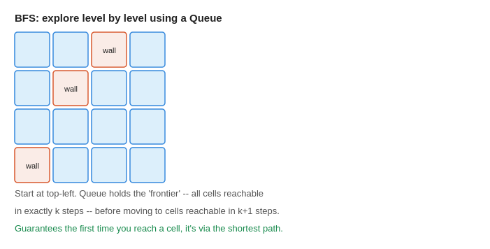
Java pseudocode
Shortest Path in Binary Matrix (grid BFS)
int findShortestPathInGrid(int[][] gridCells) {
int gridSize = gridCells.length;
if (gridCells[0][0] == 1 || gridCells[gridSize - 1][gridSize - 1] == 1) return -1;
Queue<int[]> cellsToVisit = new LinkedList<>();
cellsToVisit.offer(new int[]{0, 0});
gridCells[0][0] = 1; // mark visited by overwriting (or use a separate visited[][] array)
int stepsTaken = 1;
// all 8 possible movement directions: up/down/left/right and 4 diagonals
int[][] movementDirections = {{-1,-1},{-1,0},{-1,1},{0,-1},{0,1},{1,-1},{1,0},{1,1}};
while (!cellsToVisit.isEmpty()) {
int cellsAtThisStep = cellsToVisit.size();
for (int count = 0; count < cellsAtThisStep; count++) {
int[] currentCell = cellsToVisit.poll();
int currentRow = currentCell[0];
int currentColumn = currentCell[1];
if (currentRow == gridSize - 1 && currentColumn == gridSize - 1) {
return stepsTaken; // reached the destination
}
for (int[] direction : movementDirections) {
int neighborRow = currentRow + direction[0];
int neighborColumn = currentColumn + direction[1];
boolean isInsideGrid = neighborRow >= 0 && neighborRow < gridSize
&& neighborColumn >= 0 && neighborColumn < gridSize;
if (isInsideGrid && gridCells[neighborRow][neighborColumn] == 0) {
gridCells[neighborRow][neighborColumn] = 1; // mark visited when enqueued
cellsToVisit.offer(new int[]{neighborRow, neighborColumn});
}
}
}
stepsTaken++;
}
return -1; // destination unreachable
}Practice: Number of Islands, Rotting Oranges, Word Ladder, Shortest Path in Binary Matrix.
18. Topological Sort
Topological sort produces a linear ordering of the nodes in a directed graph such that for every directed edge from node A to node B, A appears before B in the ordering. This only makes sense for Directed Acyclic Graphs (DAGs) — graphs with no cycles — because a cycle would create a contradiction (A must come before B, but B must also come before A, which is impossible to satisfy).
This pattern is the natural model for any 'dependency ordering' problem: course prerequisites (you can't take course B until you've finished course A), build systems (compile module A before module B if B depends on A), or task scheduling. The two standard implementations are Kahn's Algorithm (BFS-based) and DFS-based topological sort.
Kahn's Algorithm works by first computing the 'in-degree' of every node — the number of edges pointing into it (i.e., the number of unfinished prerequisites). Any node with an in-degree of zero has no dependencies and can safely go first, so you start by adding all such nodes to a queue. You then repeatedly remove a node from the queue, add it to your result ordering, and 'remove' its outgoing edges by decrementing the in-degree of each of its neighbors. Whenever a neighbor's in-degree drops to zero, it means all of its prerequisites are now satisfied, so you add it to the queue too. If you manage to process every node this way, you have a valid topological order; if some nodes never reach in-degree zero, that means a cycle exists and no valid ordering is possible.
The DFS-based alternative explores the graph depth-first, and adds each node to the front of the result list only after all of its descendants have been fully explored (this is called post-order). Since a node's dependencies are guaranteed to finish exploring before the node itself does, prepending in post-order naturally produces a valid topological ordering. Recognize this pattern whenever a problem describes prerequisites, dependencies, or 'must happen before' relationships between discrete tasks or items.
How it works — visually
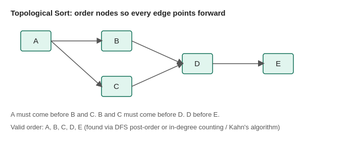
Java pseudocode
Course Schedule (detect if ordering is possible)
boolean canFinishAllCourses(int totalCourses, int[][] coursePrerequisites) {
List<List<Integer>> courseGraph = new ArrayList<>();
for (int course = 0; course < totalCourses; course++) {
courseGraph.add(new ArrayList<>());
}
// inDegreeCount[course] = number of unfinished prerequisites for that course
int[] inDegreeCount = new int[totalCourses];
for (int[] prerequisitePair : coursePrerequisites) {
int courseToTake = prerequisitePair[0];
int requiredCourse = prerequisitePair[1];
courseGraph.get(requiredCourse).add(courseToTake);
inDegreeCount[courseToTake]++;
}
// start with every course that has NO prerequisites
Queue<Integer> readyToTakeQueue = new LinkedList<>();
for (int course = 0; course < totalCourses; course++) {
if (inDegreeCount[course] == 0) readyToTakeQueue.offer(course);
}
int coursesCompleted = 0;
while (!readyToTakeQueue.isEmpty()) {
int currentCourse = readyToTakeQueue.poll();
coursesCompleted++;
// "completing" this course removes it as a prerequisite for its dependents
for (int dependentCourse : courseGraph.get(currentCourse)) {
inDegreeCount[dependentCourse]--;
if (inDegreeCount[dependentCourse] == 0) {
readyToTakeQueue.offer(dependentCourse);
}
}
}
// if not all courses were completed, a cycle blocked some of them
return coursesCompleted == totalCourses;
}Practice: Course Schedule, Course Schedule II, Alien Dictionary, Find Eventual Safe States.
19. Union-Find (Disjoint Set Union)
Union-Find, also called Disjoint Set Union (DSU), is a data structure that efficiently tracks a collection of elements partitioned into disjoint (non-overlapping) groups, and supports two operations extremely fast: checking whether two elements belong to the same group, and merging two groups into one. It's the ideal tool for problems about connectivity — determining whether a graph has cycles, counting connected components, or grouping items based on pairwise relationships.
The structure works using a 'parent' array, where each element initially points to itself, meaning every element starts as its own group of one. The find(x) operation follows parent pointers from x upward until it reaches a node that points to itself — this final node is the 'representative' or 'root' of x's group. Two elements are in the same group if and only if find() returns the same root for both. The union(x, y) operation merges two groups by finding the root of each, and then making one root point to the other, effectively merging the two trees into one.
Two optimizations make this structure nearly O(1) per operation in practice, despite looking like it could require O(n) tree traversals. Path compression flattens the tree during every find() call — as you walk from x up to the root, you make every node along that path point directly to the root, so future lookups for those same nodes are instant. Union by rank (or size) ensures that when merging two groups, the smaller tree is always attached under the larger one's root, preventing the tree from becoming a long, inefficient chain. Together, these optimizations bring the amortized time complexity down to nearly constant time per operation, formally O(alpha(n)) where alpha is the extremely slow-growing inverse Ackermann function.
Recognize Union-Find whenever a problem involves grouping items based on pairwise 'these two belong together' relationships, detecting cycles in an undirected graph, or incrementally answering 'are these two connected' queries as edges are added one at a time.
How it works — visually
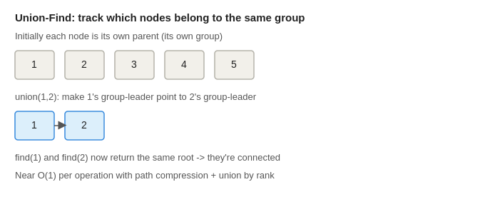
Java pseudocode
Union-Find with path compression and union by rank
class DisjointSetUnion {
int[] parentOf;
int[] treeRank;
DisjointSetUnion(int totalElements) {
parentOf = new int[totalElements];
treeRank = new int[totalElements];
for (int element = 0; element < totalElements; element++) {
parentOf[element] = element; // every element starts as its own group's root
}
}
int findGroupRoot(int element) {
if (parentOf[element] != element) {
// path compression: point directly to the root for faster future lookups
parentOf[element] = findGroupRoot(parentOf[element]);
}
return parentOf[element];
}
void unionGroups(int firstElement, int secondElement) {
int firstRoot = findGroupRoot(firstElement);
int secondRoot = findGroupRoot(secondElement);
if (firstRoot == secondRoot) return; // already in the same group
// union by rank: attach the smaller tree under the bigger tree's root
if (treeRank[firstRoot] < treeRank[secondRoot]) {
parentOf[firstRoot] = secondRoot;
} else if (treeRank[firstRoot] > treeRank[secondRoot]) {
parentOf[secondRoot] = firstRoot;
} else {
parentOf[secondRoot] = firstRoot;
treeRank[firstRoot]++;
}
}
boolean areConnected(int firstElement, int secondElement) {
return findGroupRoot(firstElement) == findGroupRoot(secondElement);
}
}Practice: Number of Connected Components, Redundant Connection, Accounts Merge, Graph Valid Tree.
20. Dynamic Programming (1D & 2D)
Dynamic Programming (DP) is a technique for solving problems by breaking them into overlapping subproblems, solving each subproblem exactly once, and storing (caching) its result so it never needs to be recomputed. This is fundamentally different from plain recursion or divide-and-conquer, where the same subproblem can be solved from scratch many times, leading to exponential blowup. DP applies specifically when a problem has two properties: optimal substructure (the best solution to the whole problem can be built from best solutions to its subproblems) and overlapping subproblems (the same smaller subproblem gets encountered repeatedly along different paths).
There are two equivalent ways to implement DP. Top-down (memoization) keeps the natural recursive structure of the problem, but adds a cache (usually a HashMap or array) that stores the result of each subproblem the first time it's computed; every subsequent call for the same inputs just returns the cached value instantly instead of recomputing. Bottom-up (tabulation) flips the direction: instead of starting from the big problem and recursing down, you start by solving the smallest subproblems first, store their answers in a table (usually an array), and iteratively build up to the final answer using previously computed table values. Bottom-up is often preferred in interviews because it avoids recursion overhead and stack depth limits.
The classic introductory example is 'Climbing Stairs': the number of ways to reach step n depends only on the number of ways to reach step n-1 and step n-2 (since you can take 1 or 2 steps at a time), so waysToReach[n] = waysToReach[n-1] + waysToReach[n-2]. This is a 1D DP because the state is described by a single variable (the current step). 2D DP extends this to problems where the state depends on two variables — for example, 'Longest Common Subsequence' between two strings needs a state of (index in string A, index in string B), so you build a 2D table where the entry at row i, column j represents the answer considering the first i characters of A and the first j characters of B.
Recognize DP whenever a problem asks for an optimal value (min/max/count of ways) and a greedy or brute-force approach either gives a wrong answer or is exponentially slow due to solving the same smaller subproblem repeatedly. The core skill is identifying the 'state' (what varies between subproblems) and the recurrence relation (how a state's answer relates to smaller states' answers).
How it works — visually
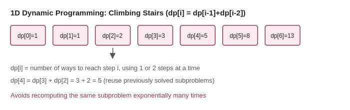
Java pseudocode
Climbing Stairs (1D DP, bottom-up)
int countWaysToClimbStairs(int totalSteps) {
if (totalSteps <= 2) return totalSteps;
// waysToReach[step] = number of distinct ways to reach that step
int[] waysToReach = new int[totalSteps + 1];
waysToReach[1] = 1;
waysToReach[2] = 2;
for (int step = 3; step <= totalSteps; step++) {
// reaching "step" comes from either a 1-step jump from step-1,
// or a 2-step jump from step-2 -- reuse both previously solved subproblems
waysToReach[step] = waysToReach[step - 1] + waysToReach[step - 2];
}
return waysToReach[totalSteps];
}Practice: Climbing Stairs, House Robber, Longest Common Subsequence, Coin Change.
How to Use This Guide
- Follow the order: patterns are sequenced from easiest to hardest, and later patterns sometimes build on ideas from earlier ones (e.g. Graph BFS builds on the queue mechanics from Tree BFS; Backtracking's recursive mindset helps with Tree DFS and DP).
- Read the problem statement first and try to restate it in your own words before looking at the code — this is the single best predictor of interview success.
- Study the diagram to build a visual mental model of the mechanism, not just the code.
- Read every comment in the pseudocode — they explain the WHY behind each line, not just the WHAT.
- Type out the Java pseudocode yourself rather than copy-pasting — muscle memory matters.
- Solve the practice problems listed per pattern on LeetCode, referring back only when stuck.
- Once a pattern feels automatic, most 'new' interview problems will just be a remix of these 20 templates.